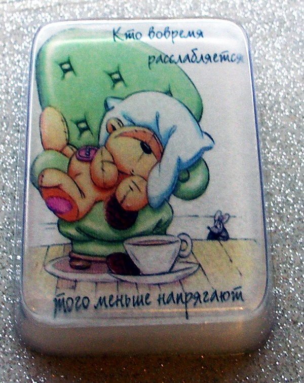

Мыло «Открытка»

Описание
«Лучший подарок – это деньги», - скажут одни. «Нет, куда приятнее презент, сделанный своими руками» - возразят другие. «Добрый совет дороже любого подарка» - вступят в спор третьи. Мы же в общей дискуссии принимать участия не станем, ведь настоящий мыловар знает способ, как угодить всем. Даже, если вы привыкли дарить на дни рождения и праздники денежные купюры, это вовсе не означает, что их нельзя преподнести оригинальным способом. Да и добрый совет можно произнести вслух, а можно запечатлеть на бумаге. Желательно, водорастворимой. А затем с ее использованием приготовить оригинальную открытку, которая станет приятным дополнением к основному подарку.
Состав
- Прозрачная мыльная основа -40 грамм
- Белая мыльная основа -60 грамм
- Пальмоядровое масло, баттер – 1/3 чайной ложки
- Отдушка «Хит» -1 -2 капли
- Форма Прямоугольник.
- Бумага водорастворимая – 1 лист
Рецепт
- Найдите в сети или создайте сами оригинальную открытку. Это может быть мудрое или смешное изречение или просто пожелание здоровья.
- Распечатайте картинку на водорастворимой бумаге. Только следите, чтобы ее размер соответствовал параметрам формы для мыла.
- Растопите половину прозрачной мыльной основы. Сделать это можно в микроволновой печи или на водяной бане. И в том, и в другом случае очень важно соблюдать температурный режим, не перегревая основу и не доводя ее до кипения. Лучше всего, конечно, использовать специальный прибор для плавления мыльной основы.
- Перелейте основу в форму, так чтобы она покрывало дно.
- Сбрызните поверхность спиртом и дождитесь появления на поверхности мыла прозрачной пленки.
- Теперь очень быстро и аккуратно поместите картинку изображением вниз.
- Растопите вторую половину мыльной основы и вылейте ее в форму поверх картинки. Оставьте до полного застывания.
- Растопите белую мыльную основу. Добавьте базовое масло и отдушку. Тщательно перемешайте.
- Вылейте основу в форму и оставьте до полного застывания.
- Аккуратно выньте мыло из формы. Чудесная открытка готова!